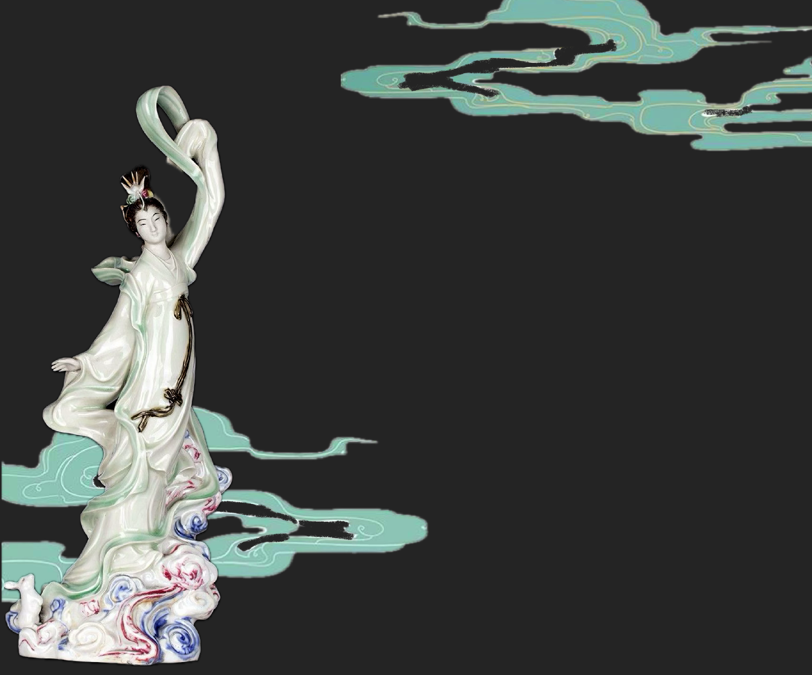

Explore the illustration · hover over the items, click to read
The round moon is associated with reunion, offering a shared image for loved ones who are far apart.
Cutting a mooncake into portions makes a sweet treat something to share around the table.
Sharing tea alongside mooncakes creates a moment to slow down and enjoy one another’s company.
01 / The Moon
Mid-Autumn
Festival
中秋节 · Zhōngqiū Jié
- WHERE
- China & Chinese communities worldwide
- WHEN
- 15th day of the 8th Chinese lunisolar month
Under the Same Moon.
The Mid-Autumn Festival, also known as the Moon Festival or Mooncake Festival, is a harvest festival celebrated in Chinese culture. It occurs on the 15th day of the 8th month of the Chinese lunisolar calendar and can fall between 7 September and 8 October (inclusive) of the Gregorian calendar. On this day, the Chinese believe that the moon is at its fullest and brightest, coinciding with the time of harvest in the middle of autumn.